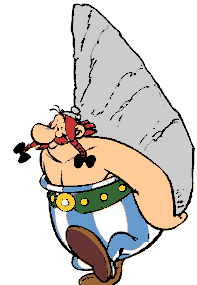
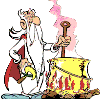
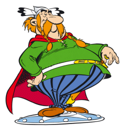

Il est susceptible (qui est gros?), sensible et gourmand (les sangliers). Il est tombé dans la marmite de potion magique quand il était petit ce qui lui donne une force extraordinaire, dont il n'a pas toujours conscience, de façon permanente. Grand maladroit, il adore se bagarrer et il comprend tout à retardement. Sa phrase célèbre est: Ils sont fous ces Romains

Druide vénérable du village, détenteur du savoir. Il détient le secret de la potion magique dont il a lui-même créé la recette.

Il s'agit du chef du village. Il aime se promener fièrement sur son bouclier porté par 2 valeureux gaulois. Que de fois a-t-il fait des chutes!! Bonemine, son épouse, le seconde fièrement et l'appelle gentiment son "Cochonnet".
Idéfix, fidèle chien d'obélix, joue un rôle prépondérant dans Astérix et Cléopätre où son flair permet de sauver nos héros d'une triste fin dans une pyramide. Idéfix adopte les idées modernes écologiques car il ne supporte pas qu'on fasse du mal aux arbres.
Dans le cadre du cours Développement Web I